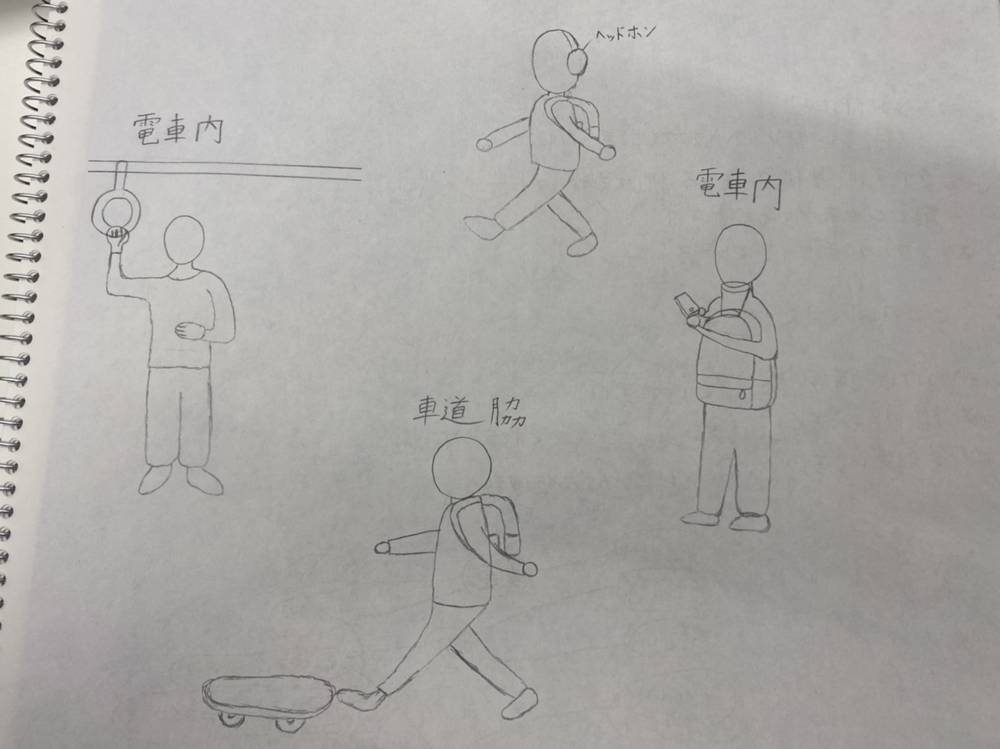

観察課題の解決

自分達が取り組むことにした問題の説明（スケッチなども含める）
10月30日
川崎から横浜間の電車内で、某有名なカフェの蓋つきカップを前に背負っているリュックと顎で支えて、両手でスマートフォンを扱っている人を見かけた。
とても器用だと感心した。
しかし、なぜ、そのような行為に至ったのか気になった。
鞄と顎でカップを支えてスマホを扱っている人を見かけた。その人がバランスを無理に保たずカップを持つ方法はないだろうか。
最終的に自分が作った製品プロトタイプの写真や動画(必ず使っているところを撮影する)
そこで、カップホルダーを手で持ってる風なデザインにし、誰かにぶつかられないようにした。
また、カップを両手を開けて持つために、リュックを持ち歩いていた人だったので、リュックの紐に付けることにした。
説明
手の形。小指で支えている。
ホルダーは取り外し可能。
リュックの紐の上の方に取り付けたら、香りも味わえる。
使用機材
fusion360、3Dプリンタ
苦労したこと
穴を開ける際、90度横向きだと塞がってしまうことがわかった。
棒やすりで削ることはできるが、曲線の穴を開けるには、短く作成し、くっつけるしか方法がないことがわかった。
ワイヤーを使うことで様々な大きさのカップを入れることができるように工夫した点はとても良かった。
ただ、素材が滑りやすいため、底をつけておくのも良いのかもしれないと思った。
※同じ班のメンバーのDesign for Othersのページへのリンク
ミル
たねたろー
あみくら
かりん